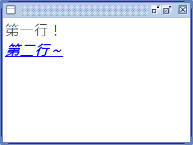

JTextPane
JTextPane 雖然能夠顯示豐富的文字樣式，但並非直接透過元件本身提供的操作來完成，而是透過 MVC 架構，搭配許多其它元件來進行。因此本章節示範大致上使用 JTextPane 的情形。
顯示結果如下：

JTextPane 雖然能夠顯示豐富的文字樣式，但並非直接透過元件本身提供的操作來完成，而是透過 MVC 架構，搭配許多其它元件來進行。因此本章節示範大致上使用 JTextPane 的情形。
顯示結果如下：
